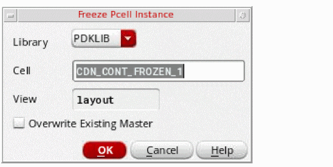

1
Introduction to Fluid Guard Rings
This chapter introduces you to the concept of fluid Pcells and the fluid guard rings (FGR).
Introducing Fluid Pcells
Fluid Pcells provide an infrastructure to develop new Pcells that can be edited graphically (like shapes), and whose behavior in response to editing commands can be defined and customized using SKILL language.
Fluid Pcells offer to a Pcell developer complete control over the graphical editing functionality of a Pcell super master shape object.
You can draw the shapes in a fluid Pcell based on its fluid shape’s points or any additional Pcell parameters. You can select a fluid shape from the top-level in Virtuoso Layout Suite L. In addition, you can edit designated fluid shapes within a sub-master like any other top-level shape. A set of SKILL updater functions, associated with the fluid Pcell super master, are called in response to the top-level editing commands, such as Chop, Merge, Split, Reshape, Convert To Polygon, Abut, and Obstruct.
The following figure shows an example of a fluid Pcell:
Features of Fluid Pcells
Fluid Pcells have the following features:
- You can Chop, Merge, and Convert To Polygon a fluid Pcell just like any other shape.
- You can stretch, split, or reshape a fluid shape within a fluid Pcell instance sub-master:
- You can use the Tunnel command to connect through the fluid Pcell instances.
- You can partially select an edge, centerline, or end point in a fluid Pcell.
- The content of the fluid shape is specified in the hidden Pcell parameters.
- Fluid Pcells are useful for guard rings, space filling capacitors, and filling structures.
- cdsGuardRing or FGR is the first application of fluid Pcells.
For detailed information about fluid Pcells, refer to the Creating Fluid SKILL Pcells application note available on the
Introducing Fluid Guard Rings
Fluid guard rings are a type of fluid Pcells that can be used to enclose one or more objects, such as devices or device chains.
There are two types of FGRs, p-diffusion or n-diffusion. These are the new generation fluid Pcell devices that comprise the following parts:
- Diffusion Layer: Encloses all other parts of the guard ring, except the implant or well layer when one is required.
- Contact Layer: A set of sub-rectangles, which are vias. The layer specified as the Contact layer is entirely enclosed by the Metal and the Diffusion layers; the vias are centered within the Metal layer.
- Metal Layer: Encloses the vias, which are centered within the Metal layer. The Metal layer is entirely enclosed by the Diffusion layer.
- Implant/Well Layer: An optional layer. You can define multiple implant and/or well layers for a guard ring.
The following figure shows a cross-section of an FGR device.
Refer to the following chapters for detailed procedural information:
- Installing Fluid Guard Rings
- Creating Fluid Guard Rings
- Editing Fluid Guard Rings
- Geometry Changes in Virtuoso Releases
Toolbar for Creating and Editing Fluid Guard Rings
From the Window – Toolbars menu, click the Guardring submenu. The following toolbar gets displayed:
This toolbar has the following icons that enable you to create and edit FGR instances:
| Toolbar Command | Toolbar Icon | Alternative Access from Layout L Menu | Description |
|
Creates an FGR instance in wrap mode around a selected device. For more information, refer to the Wrap Mode section in Chapter 3, “Creating Fluid Guard Rings.” |
|||
|
Creates an FGR instance in path mode. For more information, refer to the Path Mode section in Chapter 3, “Creating Fluid Guard Rings.” |
|||
|
Creates an FGR instance in rectangle mode. For more information, refer to the Rectangle Mode section in Chapter 3, “Creating Fluid Guard Rings.” |
|||
|
Creates an FGR instance in polygon mode. For more information, refer to the Polygon Mode section in Chapter 3, “Creating Fluid Guard Rings.” |
|||
|
Converts the selected FGR instance into a polygon. For more information, refer to the Converting a Fluid Guard Ring to a Polygon section in Chapter 4, “Editing Fluid Guard Rings.” |
|||
|
Removes a part of an FGR instance or cut it into pieces. For more information, refer to the Chopping a Fluid Guard Ring section in Chapter 4, “Editing Fluid Guard Rings.” |
|||
|
Merges FGRs and create a new FGR device. For more information, refer to the Merging Fluid Guard Rings section in Chapter 4, “Editing Fluid Guard Rings.” |
|||
|
Creates a tunnel through an FGR. For more information, refer to the Creating a Tunnel Through a Fluid Guard Ring section in Chapter 4, “Editing Fluid Guard Rings.” |
|||
|
Removes one or more tunnels from an FGR. For more information, refer to the Healing a Fluid Guard Ring section in Chapter 4, “Editing Fluid Guard Rings.” |
|||
|
Alters the fluid shape points and re-generates the underlying guard ring based on the new points. For more information, refer to the Reshaping a Fluid Guard Ring section in Chapter 4, “Editing Fluid Guard Rings.” |
|||
|
Splits the fluid shape of a guard ring. For more information, refer to the Splitting a Fluid Guard Ring section in Chapter 4, “Editing Fluid Guard Rings.” |
|||
|
Cleans all the overlapping contacts from an FGR, or just from an area on the canvas that you draw based on the option you select. For more information, refer to the Cleaning Overlapped Contacts from Fluid Guard Rings section in Chapter 4, “Editing Fluid Guard Rings.” |
Fluid Guard Ring Context-Sensitive Menu
Right-click any FGR instance to display the context-sensitive Instance – Fluid Pcell menu that provides a quick access to the FGR editing commands.
This Instance – Fluid Pcell context-sensitive menu provides the following options:
| Editing Command | Menu Icon | Alternative Access from Layout L Menu | Description |
A few more options in the Instance context-sensitive menu are described in the table below:
| Editing Command | Menu Icon | Alternative Access from Layout L Menu | Description |
|
Enables you to place a copy the selected FGR instance to the same cellview or to another cellview. For more information, refer to the Copying Objects section in the Editing Objects chapter of the Virtuoso Layout Suite L User Guide. |
|||
|
Lets you move the selected FGR instance to another location in the current or another cellview. For more information, refer to the Moving Objects section in the Editing Objects chapter of the Virtuoso Layout Suite L User Guide. |
|||
|
Stretches the FGR instance by using the center line or the vertex of the path. For more information, refer to the Stretching a Fluid Guard Ring section in Chapter 4, “Editing Fluid Guard Rings.” |
|||
|
Enables you to perform Pcell editing that is normally not supported by the Pcell parameters. This means you can avoid geometry changes in the FGR instances using this menu option. For more information, refer to the Freezing and Unfreezing Pcell Instances section in the Working With Hierarchical Designs chapter of the Virtuoso Layout Suite L User Guide. Clicking this menu option opens the Freeze Pcell Instance form.

On this form, specify a new cell name with which the FGR instance should be saved as a non-fluid Pcell instance of a new master created on the disk. By default, the new cell is named in the format, |
|||
|
Lists the FGR instances under the cursor. You can deselect or select the check box next to each FGR instance name. As a result, it gets ignored or considered for the edit actions you perform. |
|||
|
Displays the Edit Instance Properties form that has separate tabs for changing the editable Attribute, Connectivity, Parameter, Property, and ROD. For more information, refer to the Edit Instance Properties Form section in Appendix A, “Fluid Guard Ring Form Descriptions.” |
Return to top